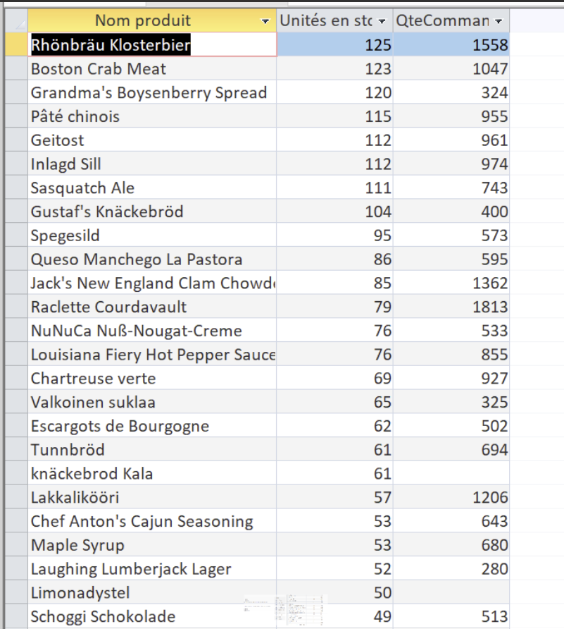
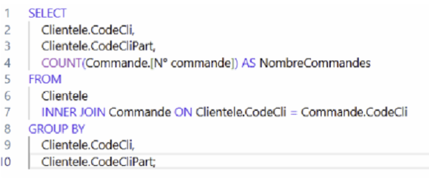
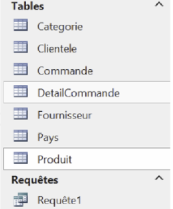

Partie 1 : Sources d'idées
Mes sources d'inspiration
Ma partie du projet reposait sur le fait de trouver des idées pour développer notre application, dont le but est de faciliter l'achat de produits pour les clients, tout en créant un système de fidélité qui attire les clients avec des offres promotionnelles, par exemple des petits prix sur des produits dont la date de péremption est proche.
Je me suis inspirée de l'entreprise TooGoodToGo, qui lutte contre le gaspillage alimentaire en proposant des paniers surprise contenant des aliments dont la date de péremption est proche, ou des invendus, pour le tiers du prix initial. Cette idée, combinée à un programme de fidélité qui permet de gagner des points à chaque achat et de profiter d'offres promotionnelles, voire de produits gratuits au bout d'un certain seuil de points, m'a semblé pertinente pour attirer davantage de clients et faire perdurer leur envie de consommer les produits de KDou.
J'ai donc choisi de combiner le concept de TooGoodToGo avec celui du programme de fidélité Lidl Plus, qui permet aux clients abonnés de profiter d'offres en achetant fréquemment. De plus, Carrefour est en partenariat avec TooGoodToGo depuis 2019, ce qui m'a encouragée à rassembler ces trois composants et à créer des fonctionnalités pertinentes pour cette application mobile.
Requête personnelle : les produits en surplus de stock
Objectif de ma requête
J'ai voulu savoir quels sont les produits dont le stock est important par rapport aux quantités commandées par les clients. L'objectif est de repérer les produits en surplus afin d'aider KDou à mieux gérer ses approvisionnements et à envisager des offres promotionnelles sur ces produits.
KDou pourrait alors les proposer à prix réduit ou les intégrer aux paniers surprise prévus dans notre application, afin de favoriser leur vente et de limiter le gaspillage alimentaire.
Explication de ma requête
J'ai relié les tables Produit et DetailCommande grâce aux champs RefProd et Réf produit. J'ai utilisé un LEFT JOIN pour inclure aussi les produits jamais commandés. En effet, il est intéressant de voir ce que les clients achètent le plus, mais observer les invendus permet de créer des paniers surprise ciblant certains produits et de susciter l'intérêt de nouveaux consommateurs.
J'ai aussi utilisé SUM pour calculer les quantités commandées et GROUP BY pour les regrouper par produit. Enfin, HAVING permet de garder les produits dont le stock est supérieur aux quantités commandées, ainsi que ceux qui n'ont jamais été commandés.
Ma requête SQL
SELECT P.NomProd, P.UnitStock, SUM(DC.Quantité) AS QteCommandee
FROM Produit AS P
LEFT JOIN DetailCommande AS DC ON P.RefProd = DC.[Réf produit]
WHERE P.UnitStock > 0
GROUP BY P.RefProd, P.NomProd, P.UnitStock
HAVING P.UnitStock > SUM(DC.Quantité)
OR SUM(DC.Quantité) IS NULL
ORDER BY P.UnitStock DESC;Résultat de ma requête

La requête fait apparaître 10 produits qui possèdent encore du stock, mais pour lesquels aucune commande n'a été enregistrée. Par exemple, le knäckebrod Kala compte 61 unités en stock.
Analyse de ce résultat
Ces produits pourraient être intéressants à étudier pour les promotions ou les paniers surprise de KDou. Cependant, cela ne signifie pas forcément qu'ils se vendent mal : les quantités commandées correspondent aux commandes enregistrées dans la base, et non nécessairement aux ventes récentes. Il faudrait aussi prendre en compte les dates des commandes et la durée de conservation des produits avant d'envisager des promotions.
Requête de groupe : les clients pilotes et leurs partenaires
Objectif de la requête
Dans une réflexion sur le partenariat client, la question était de savoir si des clients pilotes d'un réseau partenaire ont autant de commandes que les clients partenaires.
Explication de la requête
Pour répondre, j'ai d'abord relié les tables Clientele et Commande avec une jointure interne (INNER JOIN). J'ai ensuite utilisé la fonction COUNT() pour calculer le nombre de commandes de chaque client et GROUP BY pour regrouper les résultats. J'ai enregistré cette première requête sous le nom Requête1.

J'ai ensuite créé une deuxième requête en reliant Requête1 à elle-même pour comparer le nombre de commandes des clients pilotes avec celui de leurs partenaires. Grâce à la condition WHERE, j'ai pu identifier les clients ayant effectué le même nombre de commandes.

Allons à la prochaine partie
Partie 2